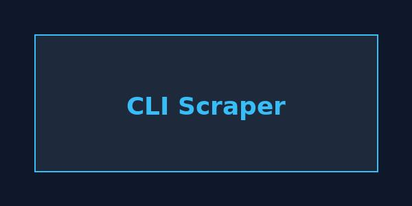
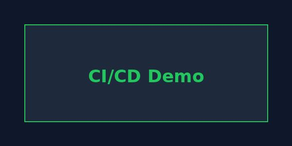
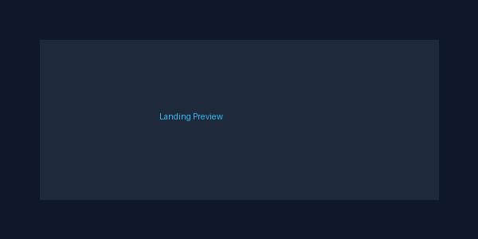

CRUD-приложение «Заметки» на Django + DRF: регистрация, токен-авторизация, REST API, SQLite.
Разрабатываю практические решения на базе LLM: от промт-инжиниринга до RAG-систем, агентов и оценки.
Лаборатория промтов: baseline, RICCE, Few-shot, цепочки, JSON-тесты. Автооценка 20 задач × 3 варианта (baseline 90%, RICCE 90%, Few-shot 10%). Оборонительный промпт, guardrails (PII, токсичность).
Streamlit-приложение для анализа отзывов: AI-судья (4.20/5), кэширование, фильтр PII (маскировка email/телефона), точность 100% на тестовом CSV.
Telegram-бот (aiogram): inline-кнопки 👍/👎, краткосрочная и долговременная память (user_prefs.json), PII-фильтр.
Библиотека из 23 промптов: роли, паттерны, домены, автоматизация, 10 JSON-шаблонов. Версионирование через prompts.py.
3 кейса (анализ отзывов, недельный отчёт, лендинг): prompt.md, input/output, notes.md с ограничениями.
Харнесс оценки LLM: 20 тестов, exact match (45%), AI-судья (0.4583), pairwise comparison с проверкой позиционного предубеждения (40% консистентности).
RAG с гибридным поиском (TF-IDF + эмбеддинги, RRF), Contextual Retrieval. Метрики: precision 0.80, faithfulness 0.49.
Мультимодальный RAG: поиск по тексту и описаниям изображений, TF-IDF, ответ с источником.
Оценка RAG: context_precision 0.867, context_recall 0.741, faithfulness 0.789, answer_relevancy 0.423. Расширение запроса.
Циклический граф (agent → retrieve → improve → generate) на чистом Python, без LangGraph API. 4/5 вопросов с ответом.
Red team для RAG: иерархия инструкций, метрики ASR (0%) и FRR (70%), 10 атак + 10 безопасных запросов.
ReAct + Reflexion: цикл Thought → Action → Observation, метрики success_rate, false_done, avg_steps. Сравнение с рефлексией и без.
Эталонная архитектура AI-приложения: 9 слоёв, 4 YAML-конфига, Mermaid-схема, guardrails и prompts.py.
Сравнение Zero-shot (0%) / RAG (80%) / Finetune (100%, demo): синтетика (85 пар), расширение запроса, таблица.
Конвейер оценки и мониторинга RAG: метрики, AI-судья на TF-IDF, срезы данных, логирование JSONL, дрейф. Демо без API.
Три режима извлечения: baseline dense, query expansion (HyDE), query decomposition (Least-to-Most). Офлайн-сравнение по hit@1, hit@3, MRR.

Парсер HTML-заголовков на Python с BeautifulSoup, CLI-интерфейсом и логированием.

CI/CD для CLI-утилиты: GitHub Actions (flake8 + pytest), Docker, docker-compose. 3 теста passed, зелёный CI-бейдж в README. Сквозной пример: от локальных тестов до автоматической проверки на GitHub.

Адаптивный одностраничный лендинг на чистом HTML и CSS. Темная тема, сетка проектов, плавные анимации.